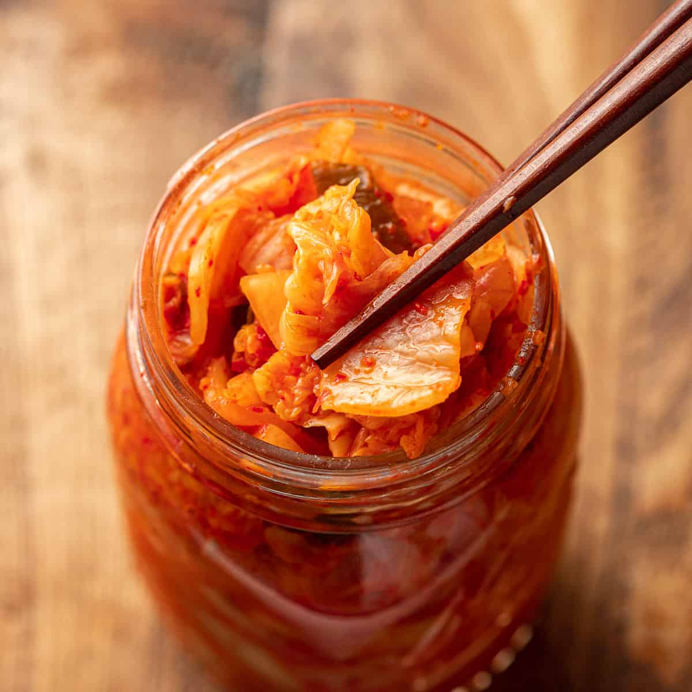

Kimchi

Description
Kimchi is a traditional Korean dish dating back to over 3,000 years ago.
Traditionally, Kimchi contains napa cabbage (Chinese cabbage), radish, carrots,
salt, garlic, fish sauce, chili powder and scallions. There are many different ways
make Kimchi, but this is the most common and basic way
Kimich is fermented and contians lots of vegetables. In turn, this makes it a very
convinent and healthy dish. You may eat it as a side dish or put it on other foods or even
use it for cooking. Kimchi is rather spicy and has a salty taste, it also has a rather umami taste
due to the spices that are added during the fermentation
Ingredients
Main Ingredients
- 4kg napa cabbage, remove thick outer cabbage leave
- 3840 ml water
- 285g Korean coarse sea slat or natural rock salt
- 97g cooking saltm medium sized salt crystals
Kimchi Seasoning/Kimchi Paste
- 2 Tbsp glutinous rice flour (sweet rice flour)
- 360ml water
- 141g gochugaru (Korean chili flakes)
- 540g Korean radish or daikon radish, julienned
- 1 Tbsp fine sea salt
- 3.5 Tbsp Korean fish sauce
- 2 Tbsp salted fermented shrimp (saeujeot), minced
- 90g Korean chives, cut in 5cm
- 140g carrots, julienned
- 42g minced garlic
- 1/2 Tbsp minced ginger
- 2 Tbsp raw sugar
- 75g ounces onion, blended(wwith a stick blender or vegetable chopper) or finely grated
*1 Tbsp = 15 ml, 1 cup = 250 ml